About Our Club
Chartered in 1922, we've spent over a century making Winchester, Virginia a better place for children and families.
The Kiwanis Club of Winchester
We are the Kiwanis Club of Winchester, Virginia — a non-profit service club focused on one simple idea: change the world one community and one child at a time.
Chartered in 1922, our club has a long history of raising and distributing funds for the benefit of our community, with a special emphasis on children. Over the decades we've grown into an active group of dedicated volunteers who show up every week — and for every cause.
We meet at noon every Wednesday at the Winchester Moose Club, located at 215 E. Cork St. Guests are always welcome — come see what we're about before you commit.
Weekly Meetings
Every Wednesday at noon
Winchester Moose Club, 215 E. Cork St., Winchester, VA

Mission & Vision
Our Mission
Kiwanis is a global organization of volunteers dedicated to improving the world one child and one community at a time. Our Winchester chapter lives this mission through hands-on service every week of the year.
Our Vision
We envision a world where every child has access to caring adults, adequate nutrition, quality education, and safe communities — and where volunteers take responsibility to make that vision real.
Kiwanis by the Numbers
From our single club in Winchester to the global stage — Kiwanis members make an enormous collective impact.
Why Children Are at the Center of Our Work
Kiwanis exists to improve the world one child and one community at a time. In Winchester, that mission is practical: helping students stay fed, giving young people chances to lead, supporting scholarships, funding local organizations, and showing up for families when help is needed.
Our history matters because it points to a simple promise: this club keeps coming back to the children and families of Winchester, year after year.
Food & Basic Needs
Bright Futures food packing and seasonal service projects help meet practical needs for local children and families.
Youth Leadership
Key Clubs, Builder's Clubs, Circle K, and scholarships help students practice leadership through service.
Local Support
Fundraising and grants help local organizations serve children, students, and families across the Winchester area.
Club Leadership
Mike Didawick
Club President
Ryan Taylor
Public Relations Chair
Website, Facebook & Newsletters
Brenda Dodd
Secretary
A Century of History
From 1922 to today — over 100 years of leaders serving the Winchester community. Drag to explore or click any decade to view full size.
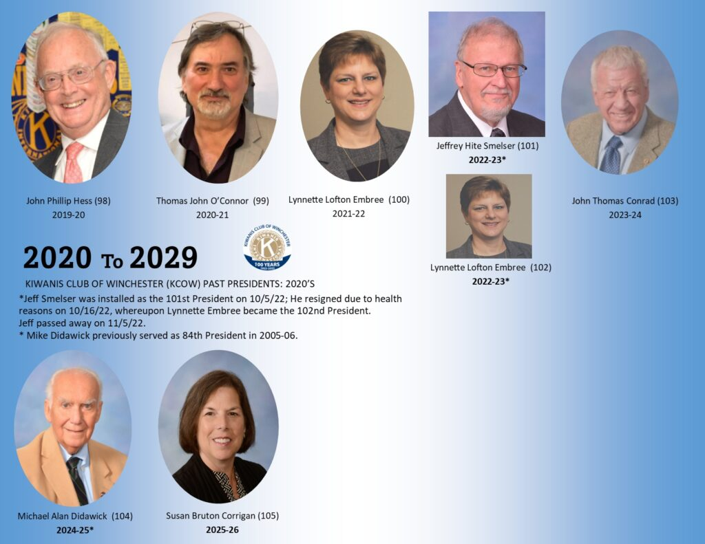
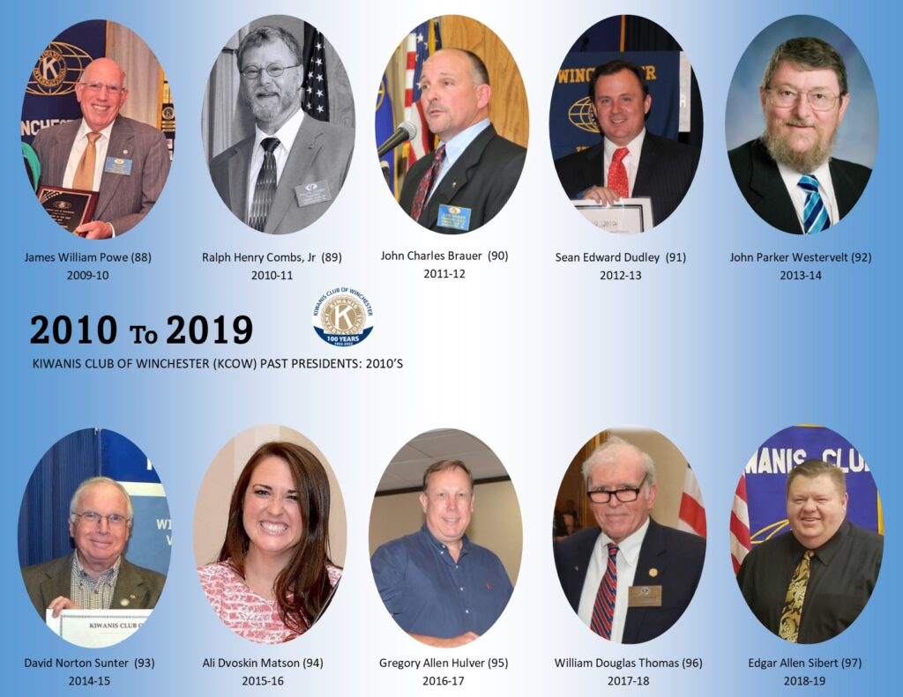
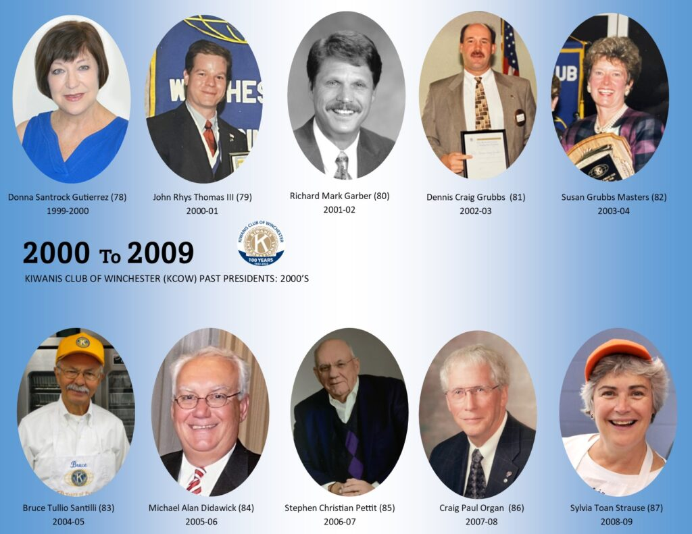
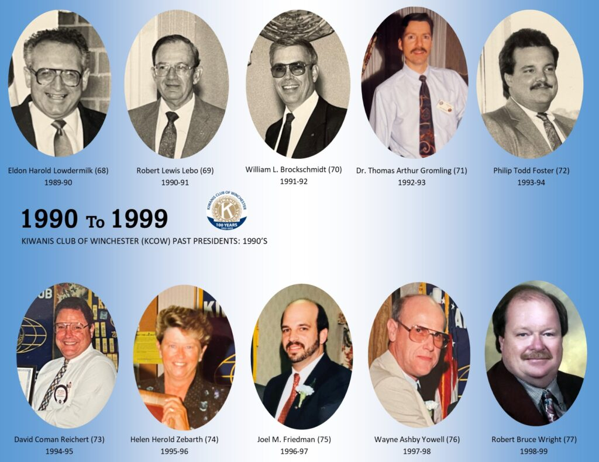
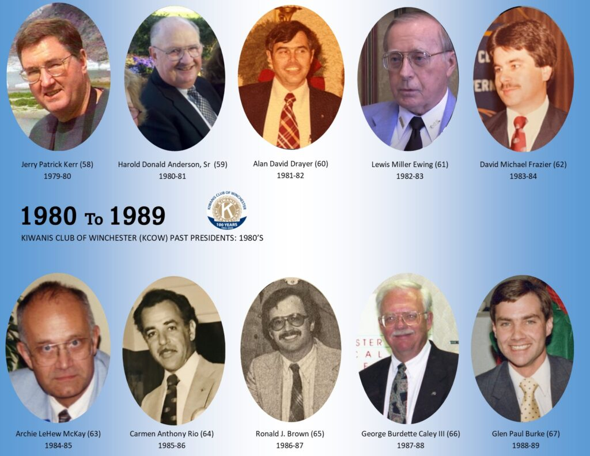
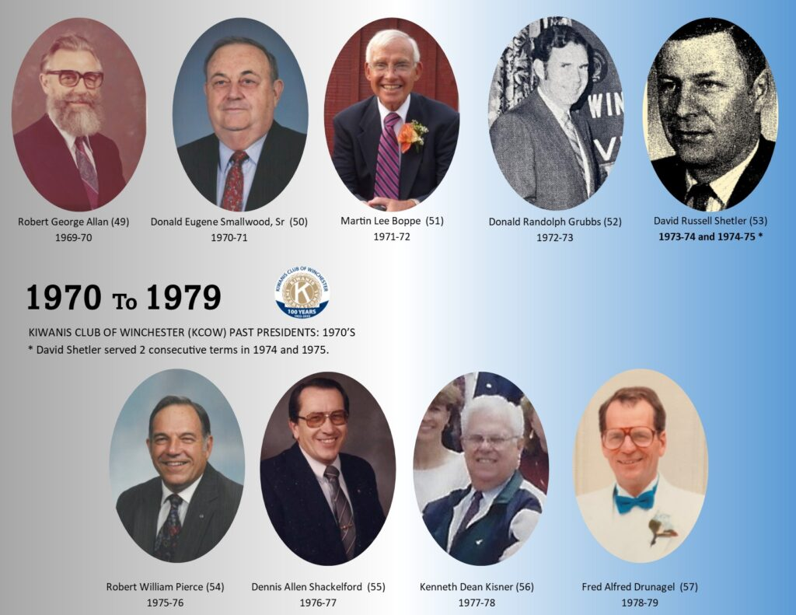
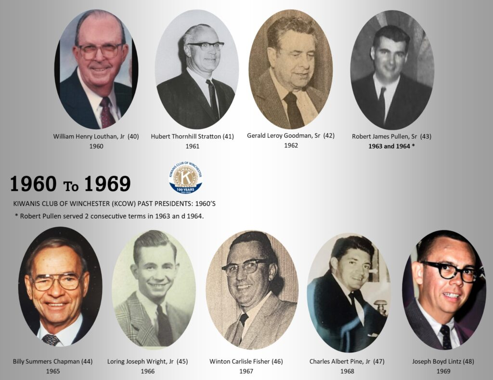
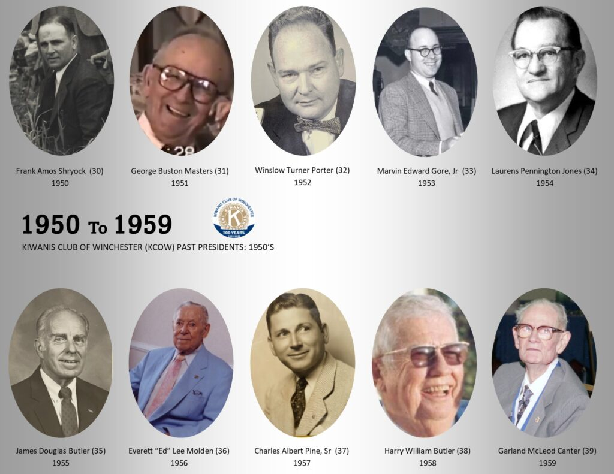
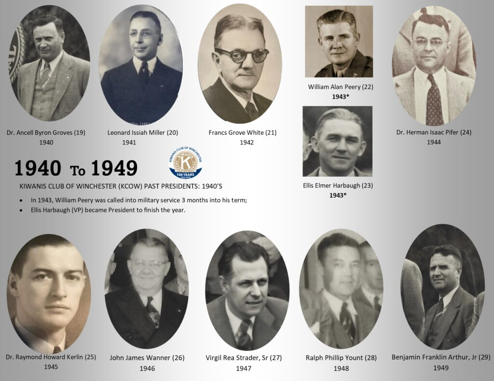
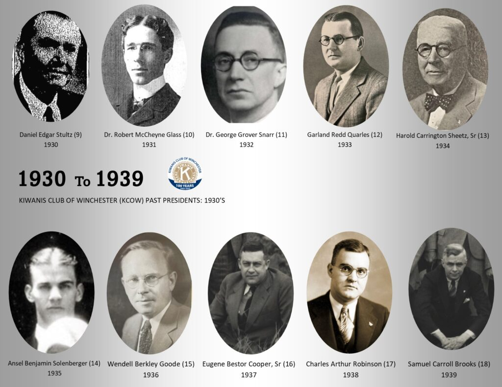
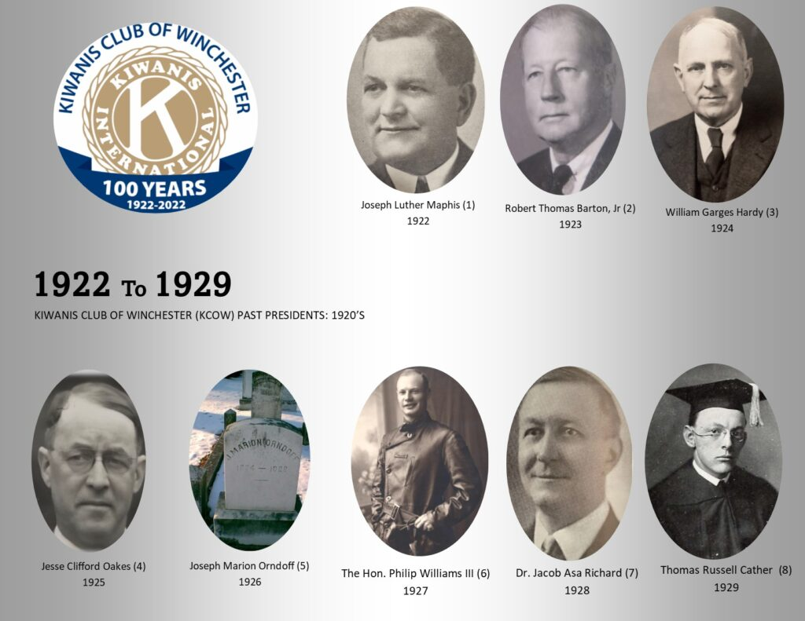
Visit Us This Wednesday
Guests are always welcome at our meetings and service projects. Come see what Kiwanis is about — no commitment required.